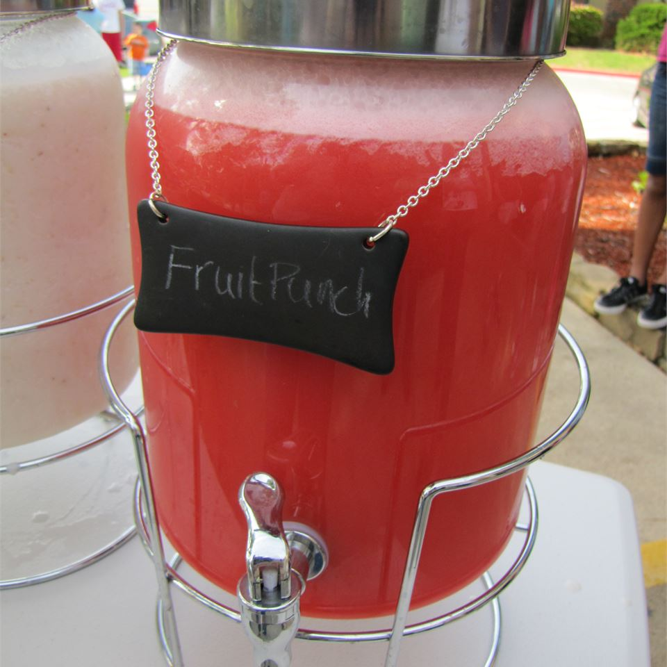

Fruit Punch

Description
Cool and easy recipe. Everyone always loves it, especially my niece.
Ingredients
- 1 (64 fluid ounce) bottle fruit punch, chilled
- 1 (64 fluid ounce) bottle unsweetened pineapple juice, chilled
- 1 (2 liter) bottle ginger ale, chilled
- 1/2 gallon orange sherbet
Steps
- In a punch bowl, mix together fruit punch, pineapple juice and ginger ale. Add scoops of sherbet into the punch. Wait for the sherbet to begin melting, approximately 10 minutes, stir gently, and serve.